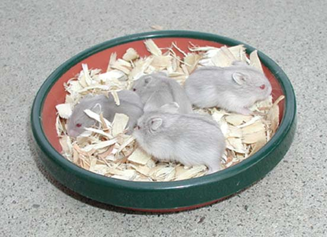
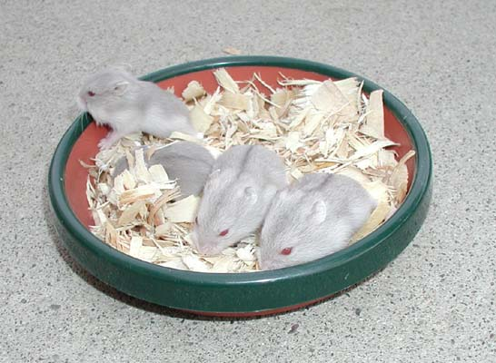

| Gray Gene Page 2 |
| If you have any ideas on this research, e-mail me. |
|  |
|  |
| Here are babies of the combined colors. The two to the front/right are the combined silver gray plus argente color. The two to the back/left are the combined silver gray plus argente plus opal color. |